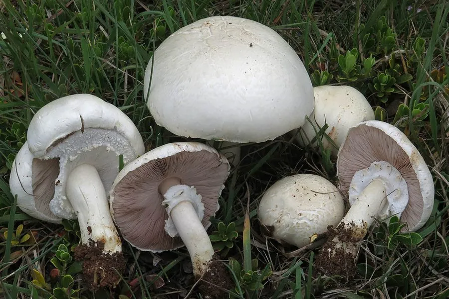

真菌 · 真菌界
野蘑菇 Agaricus arvensis

野蘑菇是草地和牧场常见的大型蘑菇，菌盖白色、菌褶由粉红变褐，有杏仁般的香气，可食但必须与有毒的近缘种区分。
- 分类
- 门担子菌门纲伞菌纲目伞菌目科蘑菇科属蘑菇属
- 栖息环境
- 草地、牧场、林缘与公园草坪，夏秋季出菇
- 地理分布
- 欧洲、北美与东亚，中国北方和西南草地常见
- 保护级别
- 暂无评估（IUCN 未评估，中国未列入重点保护名录）
物种志
野蘑菇是担子菌门蘑菇科的大型真菌，子实体单生或群生。菌盖初期半球形，后平展，直径 8–20 cm，表面白色至淡乳黄色，光滑，有时带细小的鳞片；菌肉白色，厚实，受伤后缓慢变为淡黄色。菌褶离生、密集，幼时粉红色，成熟后变成深褐色至黑褐色。菌柄白色，粗壮，长 6–15 cm，有双层菌环，菌环下表面呈齿轮状；孢子印深褐色。
野蘑菇生于草地、牧场、林缘和公园草坪，夏秋季出菇，在欧洲、北美和东亚广泛分布，中国北方和西南草地常见。它有浓郁的杏仁或茴香气味，肉质肥厚，是著名的野生食用菌，可炒食、烤制或做汤，但必须充分加热。采食时务必与同属的有毒种类区分：黄斑蘑菇等近缘种受伤后会迅速变亮黄色，并带有石碳酸的气味，误食会引起中毒。
形态与习性
- 菌盖直径 8–20 cm，白色至淡乳黄色
- 菌褶幼时粉红，成熟后深褐色
- 菌柄粗壮，有双层菌环
- 气味杏仁或茴香般的香气
- 孢子印深褐色
- 食用性可食，必须充分加热
- 易混种黄斑蘑菇等有毒近缘种伤后变亮黄
趣味知识
- 野蘑菇有杏仁般的香气，是辨认它的重要线索。
- 它的菌褶从粉红色逐渐变成深褐色，说明孢子已经成熟。
- 受伤后缓慢变淡黄是野蘑菇的特点，迅速变亮黄的近缘种可能有毒。
- 野蘑菇常出现在牧场和草坪上，夏秋雨后最容易找到。